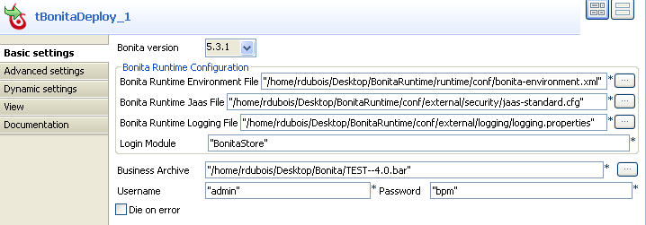
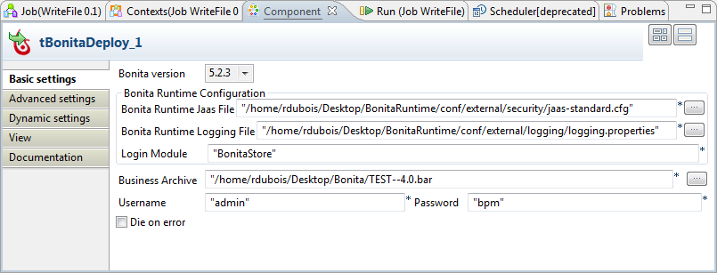
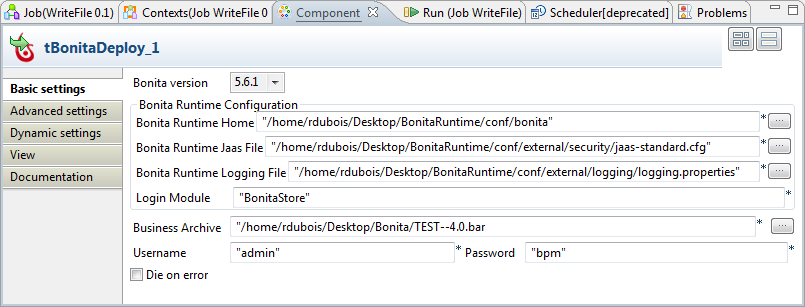
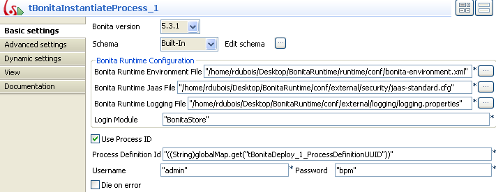
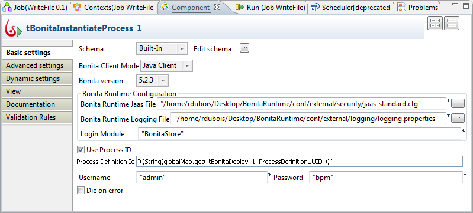
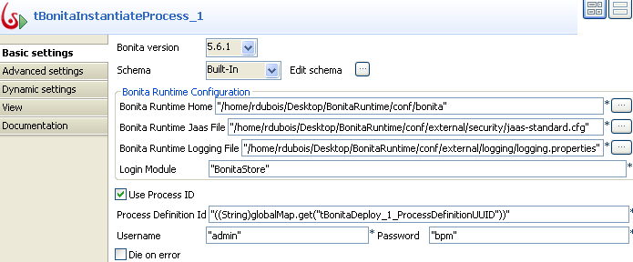
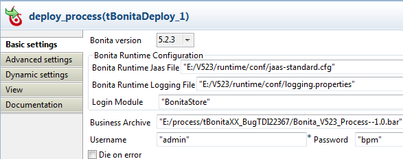
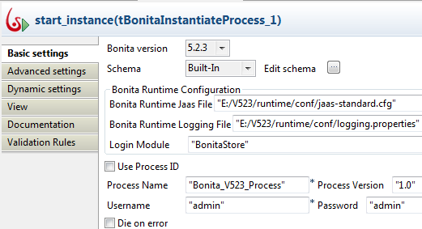

|
Component family |
Business/Bonita | |
|
Function |
This component instantiates a process already deployed in a Bonita Runtime engine. | |
|
Purpose |
This component starts an instance for a specific process deployed in a Bonita Runtime engine. | |
|
Basic settings |
Schema and Edit Schema |
A schema is a row description, i.e., it defines the number of fields that will be processed and passed on to the next component. The schema is either built-in or remote in the Repository. Click Edit Schema to make changes to the schema. Note that if you make changes, the schema automatically becomes built-in. In this component the schema is related to the Module selected. NoteThe ProcessInstanceUUID column is pre-defined in the schema of this component, reserved for the identifier number of the process instance being created. |
|
Bonita Client Mode |
Select the client mode you want to use to instantiate a BPM process. For more information about all the Bonita client modes, see Bonita's manuals. | |
|
URL |
Enter the URL of the Bonita Web application server you need to access for the process instantiation. This field is available only in the HTTP client mode. | |
|
Auth Username and Auth Password |
Enter the authentication details used to connect to the Bonita Web application server as technical user. The default authentication information is provided in these fields. For further information about them, see Bonita's manuals. These fields are available only in the HTTP client mode. | |
|
|
Bonita version |
Select the version number of the Bonita Runtime engine to be used. This field is available only in the Java client mode. |
|
|
Bonita Runtime Environment File |
Browse to, or enter the path to the Bonita Runtime environment file. This field is available only in the Java client mode. NoteThis field is displayed only when you select Bonita version 5.3.1 from the Bonita version list. |
|
|
Bonita Runtime Home |
Browse to, or enter the path to the Bonita Runtime environment directory. NoteThis field is displayed only when you select Bonita version 5.6.1 from the Bonita version list. |
|
|
Bonita Runtime Jaas File |
Browse to, or enter the path to the Bonita Runtime jaas file. This field is available only in the Java client mode. |
|
|
Bonita Runtime logging file |
Browse to, or enter the path to the Bonita Runtime logging file. This field is available only in the Java client mode. |
|
|
Use Process ID |
Select this check box to instantiate an existing process. Once checked, the Process definition ID field is activated in which you can enter the Definition ID of this process This field is available only in the Java client mode. NoteThe process definition ID is created when the process is deployed into the Bonita Runtime engine. |
| Process Name and Process Version |
Enter the ID information of a specific process you want to instantiate. This information is used to automatically generate the ID of this process. This field is available in both of the Java client mode and the HTTP client mode. | |
|
|
User name |
Type in your user name used to instantiate this process. This filed is available in both of the Java client mode and the HTTP client mode. |
|
|
Password |
Type in your password used to instantiate this process. This field is available only in the Java client mode. |
|
|
Die on error |
This check box is cleared by default, meaning to skip the row on error and to complete the process for error-free rows. |
|
Advanced settings |
tStatCatcher Statistics |
Select this check box to gather the Job processing metadata at a Job level as well as at each component level. |
|
Usage |
Usually used as a stand-alone component or as an output component. This component works closely with the BPM elements. You need to subscribe to one of the Talend solutions with BPM to effectively use this component; otherwise, you have to manually download the Bonita solution you need to use. | |
|
Connections |
|
Outgoing links (from one component to another): Row: Main (providing the output parameters from this process) Trigger: Run if; On Component Ok; On Component Error, On Subjob Ok, On Subjob Error.
Incoming links (from one component to another): Row: Main (providing the input parameters to this process) Trigger: Run if, On Component Ok, On Component Error, On Subjob Ok, On Subjob Error
For further information regarding connections, see Connection types in the Talend Open Studio User Guide. |
|
Global Variables |
|
Process Instance UUID: Indicates the identifier number of the process instance being created. This is available as a Flow variable and it can also be retrieved over the Row > Main output link. Returns a string.
For further information about variables, see How to use a variable in a Job in the Talend Open Studio User Guide. |
|
Limitation |
The Bonita Runtime environment file, the Bonita Runtime jaas file and the Bonita Runtime logging file must be all stored on the execution server of the Job using this component. | |
This scenario describes a Job that deploys a Bonita process into the Bonita Runtime and executes this process, in which a personnel request is treated.

The Job in this scenario uses three components.
tBonitaDeploy: this component deploys a Bonita process into the Bonita Runtime.
tFixedFlowInput: this component generates the schema used as execution parameters of this deployed process.
tBonitaInstantiateProcess: this component executes this deployed process.
Before beginning to replicate this schema, prepare your Bonita.bar file. If you have not subscribed to one of the Talend solutions with BPM, you need to manually export this file from the Bonita system and then deploy it into the Bonita Runtime engine, using, for example, tBonitaDeploy as presented later in this scenario. In this scenario, this file is TEST--4.0.bar. Once deployed, this process can be checked via the Bonita interface.

Drop tBonitaDeploy, tFixedFlowInput and tBonitaInstantiateProcess onto the design workspace.
Right-click tBonitaDeploy and connect tBonitaDeploy to tFixedFlowInput using a Trigger> On Subjob Ok connection.
Right-click tFixedFlowInput and connect this component to tBonitaInstantiateProcess using a Row > Main connection.
To replicate this scenario, proceed as follows:
Double-click tBonitaDeploy to open its Basic settings view.
Select Bonita version 5.3.1 from the Bonita version list. The version you select should be in sync with the version number of the Bonita Runtime engine you are using.
In the Bonita Runtime Configuration area, browse to the Bonita Runtime variable files. In the Bonita Runtime Environment file field, browse to the bonita-environnement.xml file; in the Bonita Runtime Jaas File field, browse to the jaas-standard.cfg file; in the Bonita Runtime Logging File field, browse to the logging.properties file.
Note
For users based on Bonita version 5.2.3, only the Bonita Runtime Jaas File field and the Bonita Runtime Logging File field need to be filled.
For users based on Bonita version 5.6.1, in the Bonita Runtime Home field, browse to the Bonita Runtime environment directory.
In the Business Archive field, browse to the Bonita .bar file that is the process exported from your Bonita system and will be deployed into the Bonita Runtime engine.
In the Username and the Password fields, type in your authentication information to connect to your Bonita.
Double-click tFixedFlowInput to open its Basic settings view.

Click the three-dot button next to Edit schema to open the schema editor.

Click the plus button to add one row and rename it as Name.
This name is identical with the parameter set in Bonita to execute the same process. This way, Bonita can recognize this column as valid parameter and read its value to instantiate this process.
Click OK.
In the Mode area of the Basic settings view, select the Use inline table option and click the plus button to add one row in the table.
In the inline table, click the added row and type in the person's name from your personnel between the quotation marks: ychen, whose request will be treated by this deployed process.
Double-click tBonitaInstantiateProcess to open its Basic settings view.
Select Bonita version 5.3.1 from the Bonita version list. The version you select should be in sync with the version number of the Bonita Runtime engine you are using.
In the Bonita Runtime Configuration area, browse to the Bonita Runtime variable files. In the Bonita Runtime Environment file field, browse to the bonita-environnement.xml file; in the Bonita Runtime Jaas File field, browse to the jaas-standard.cfg file; in the Bonita Runtime Logging File field, browse to the logging.properties file.
Note
For users based on Bonita version 5.2.3, only the Bonita Runtime Jaas File field and the Bonita Runtime Logging File field need to be filled.
For users based on Bonita version 5.6.1, in the Bonita Runtime Home field, browse to the Bonita Runtime environment directory.
Select the Use Process ID check box to activate the Process Definition Id field.
In the Process Definition Id field, click between the quotation marks and press Ctrl+space to open the auto-completion drop-down list containing the available global variables for this Job.
Double-click the variable you need use to add it between the quotation marks. In this scenario, double-click tBonitaDeploy_1_ProcessDefinitionUUID, which retrieves the process definition ID of the process being deployed by tBonitaDeploy.
Note
You can as well clear the Use Process ID check box to activate the Process name and the Process version fields and enter the corresponding information in the two fields. tBonitaInstantiateProcess concatenates the process name and the process version you type in to construct the process definition ID.
In the Username and Password fields, enter the username and password to connect to your Bonita.

This scenario deploys a Bonita process into the Bonita Runtime, starts an instance and outputs the process instance UUID via the Row > Main link.
Drop tBonitaDeploy, tBonitaInstantiateProcess and tLogRow onto the workspace.
Rename tBonitaDeploy as deploy_process, tBonitaInstantiateProcess as start_instance and tLogRow as show_instance_uuid.
Link tBonitaDeploy to tBonitaInstantiateProcess using the OnSubjobOk trigger.
Link tBonitaInstantiateProcess to tLogRow using a Row > Main connection.

Double-click tBonitaDeploy to open its Basic settings view.
In the Bonita Runtime Jaas File field, specify the path and name of the jaas file.
In the Bonita Runtime Logging File field, specify the path and name of the logging file.
In the Business Archive field, specify the path and name of the Bonita process.
In the Username and Password fields, enter the user authentication credentials.
Double-click tBonitaInstantiateProcess to open its Basic settings view.
In the Bonita Runtime Jaas File field, specify the path and name of the jaas file.
In the Bonita Runtime Logging File field, specify the path and name of the logging file.
In the Process Name and Process Version fields, enter the process information.
In the Username and Password fields, enter the user authentication credentials.
Double-click tLogRow to open its Basic settings view.
In the Mode area, select Table (print values in cells of a table for better display.